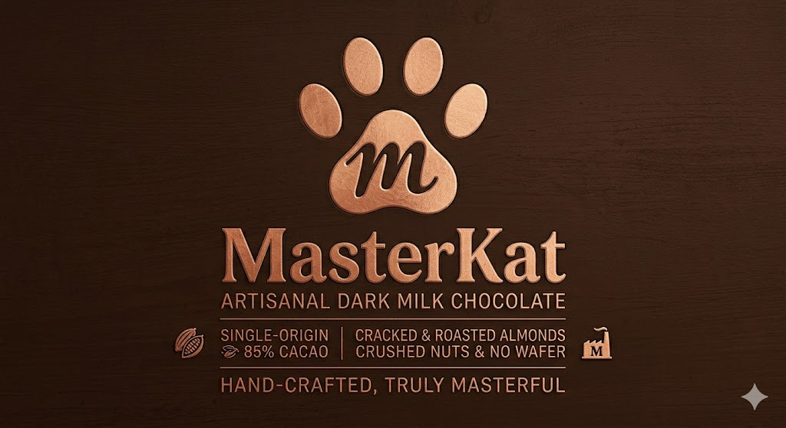
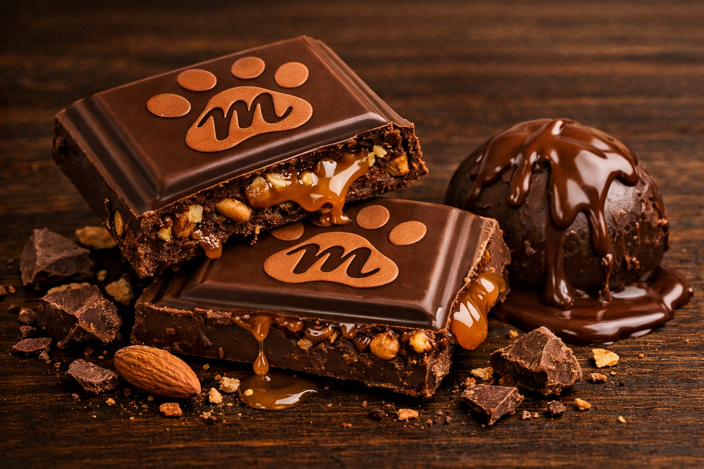
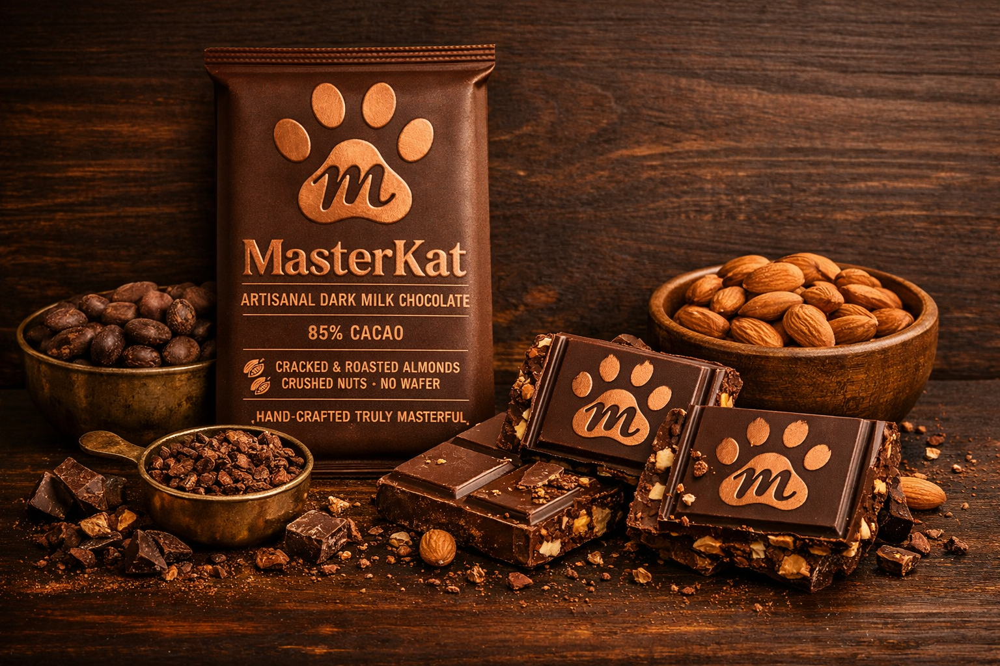
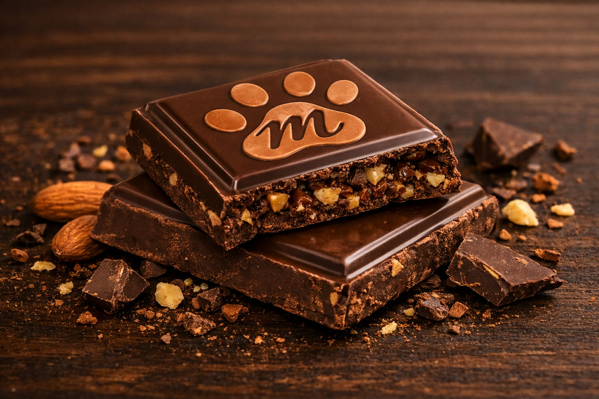
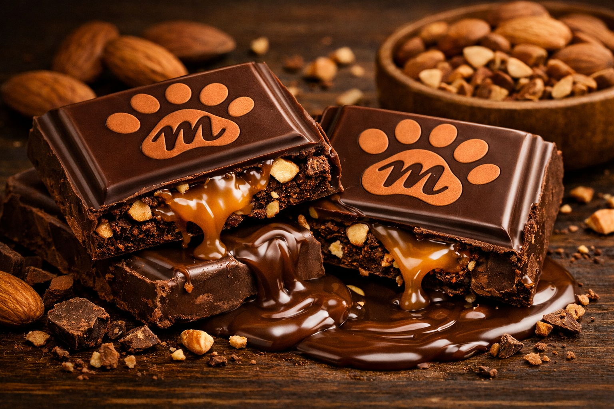

Experimente a verdadeira essência do chocolate premium com MasterKat, uma combinação perfeita entre intensidade, textura e sofisticação. Produzido artesanalmente com 85% cacau de origem selecionada, cada barra entrega um sabor marcante e encorpado, ideal para os amantes de chocolate de alta qualidade.
Enriquecido com amêndoas torradas e pedaços crocantes de nuts cuidadosamente selecionadas, o MasterKat proporciona uma experiência única a cada mordida, unindo o equilíbrio entre o amargor refinado do cacau e a crocância irresistível dos ingredientes naturais.
Mais do que um simples chocolate, MasterKat representa tradição, cuidado e excelência em cada detalhe. Feito à mão para oferecer momentos especiais, é a escolha perfeita para quem busca um sabor autêntico, elegante e inesquecível.




Na MasterKat acreditamos que chocolate é mais do que um doce — é uma experiência capaz de despertar sensações únicas. Nossa marca nasceu da paixão por ingredientes selecionados e do compromisso em oferecer produtos artesanais com qualidade superior. Cada barra é produzida com cuidado, unindo tradição, criatividade e o verdadeiro sabor do cacau.
Trabalhamos com matérias-primas escolhidas criteriosamente, combinando cacau de alta qualidade nuts selecionadas e processos artesanais que valorizam cada detalhe. O resultado é um chocolate intenso, sofisticado e cheio de personalidade, criado para quem aprecia sabores autênticos e marcantes.
Mais do que fabricar chocolates, buscamos transformar pequenos momentos em experiências especiais. Na MasterKat, cada produto carrega dedicação, excelência e a missão de surpreender em cada pedaço.
Produzido com ingredientes cuidadosamente selecionados, o MasterKat une massa de cacau e manteiga de cacau de origem especial em uma combinação sofisticada, resultando em um chocolate intenso com 85% de cacau. Sua receita equilibrada recebe um toque de leite, trazendo mais cremosidade e suavidade ao sabor marcante do chocolate amargo.
Para tornar a experiência ainda mais única, o produto conta com amêndoas torradas e pedaços crocantes de nuts selecionadas, que adicionam textura e um contraste irresistível a cada mordida. Sem wafer, o MasterKat valoriza a pureza do chocolate premium e a qualidade dos ingredientes, proporcionando uma experiência refinada, intensa e memorável para os amantes de chocolate.
A MasterKat vem expandindo sua paixão pelo chocolate artesanal para diferentes regiões do mundo, levando sabor, sofisticação e experiências únicas a novos públicos. No Brasil, uma de nossas principais filiais está localizada em São Paulo (SP), no coração da capital paulista, onde tradição e modernidade se encontram. Em Belo Horizonte (MG), reforçamos nosso compromisso com qualidade, excelência e um atendimento acolhedor que aproxima ainda mais a marca de seus clientes.
No cenário internacional, a MasterKat também marca presença em grandes centros urbanos. Em Lisboa, Portugal, levamos a intensidade do chocolate artesanal premium com um toque brasileiro, unindo culturas e sabores. Já em Paris, França, nossa filial representa elegância, requinte e a valorização da alta gastronomia em uma das cidades mais icônicas do mundo. Em Toronto, Canadá, oferecemos produtos exclusivos para um público que busca qualidade, autenticidade e experiências diferenciadas.
Independentemente da localização, cada filial mantém a essência da MasterKat: criar chocolates produzidos com excelência, ingredientes selecionados e sabores inesquecíveis, transformando cada momento em uma experiência especial.